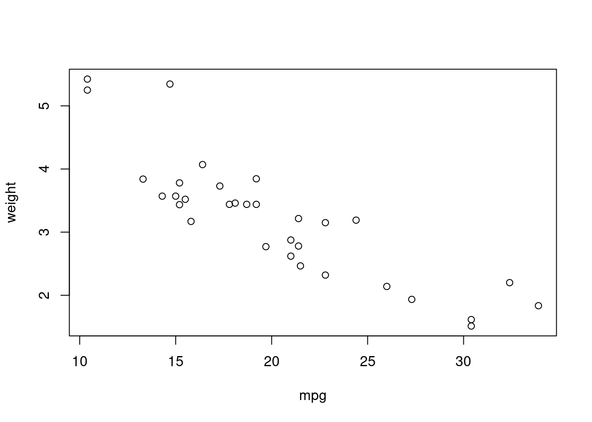

x <- 5
y <- 5
z <- 5
x-- [1] 5y-- [1] 5z-- [1] 5Ryan Heslin
June 18, 2022
R is full of quirks, some of them obscure. Getting the most out of the language takes some experience, but is well worth the effort. These techniques will be old hat to seasoned R users, but you never know: you might still learn something.
The assignment operator <- (like its right- and super-assigning cousins) is actually a function that returns its right-hand side. That means code like:
x <- 5
y <- 5
z <- 5
x-- [1] 5y-- [1] 5z-- [1] 5can be condensed into one line.
This does nothing but make your code more readable, but it’s still good to know.
When the documentation fails to resolve a question, the next step is learning what the function actually does. For closures (which are most R functions), inspecting the source code is as simple as entering the function’s name in the console:
setNames-- function (object = nm, nm)
-- {
-- names(object) <- nm
-- object
-- }
-- <bytecode: 0x55bf3b29ce20>
-- <environment: namespace:stats>tapply-- function (X, INDEX, FUN = NULL, ..., default = NA, simplify = TRUE)
-- {
-- FUN <- if (!is.null(FUN))
-- match.fun(FUN)
-- if (!is.list(INDEX))
-- INDEX <- list(INDEX)
-- INDEX <- lapply(INDEX, as.factor)
-- nI <- length(INDEX)
-- if (!nI)
-- stop("'INDEX' is of length zero")
-- if (!all(lengths(INDEX) == length(X)))
-- stop("arguments must have same length")
-- namelist <- lapply(INDEX, levels)
-- extent <- lengths(namelist, use.names = FALSE)
-- cumextent <- cumprod(extent)
-- if (cumextent[nI] > .Machine$integer.max)
-- stop("total number of levels >= 2^31")
-- storage.mode(cumextent) <- "integer"
-- ngroup <- cumextent[nI]
-- group <- as.integer(INDEX[[1L]])
-- if (nI > 1L)
-- for (i in 2L:nI) group <- group + cumextent[i - 1L] *
-- (as.integer(INDEX[[i]]) - 1L)
-- if (is.null(FUN))
-- return(group)
-- levels(group) <- as.character(seq_len(ngroup))
-- class(group) <- "factor"
-- ans <- split(X, group)
-- names(ans) <- NULL
-- index <- as.logical(lengths(ans))
-- ans <- lapply(X = ans[index], FUN = FUN, ...)
-- ansmat <- array(if (simplify && all(lengths(ans) == 1L)) {
-- ans <- unlist(ans, recursive = FALSE, use.names = FALSE)
-- if (!is.null(ans) && is.na(default) && is.atomic(ans))
-- vector(typeof(ans))
-- else default
-- }
-- else vector("list", prod(extent)), dim = extent, dimnames = namelist)
-- if (length(ans)) {
-- ansmat[index] <- ans
-- }
-- ansmat
-- }
-- <bytecode: 0x55bf3e16e228>
-- <environment: namespace:base>In my experience, beginners often don’t think to do this, perhaps because they don’t grasp that functions are first-class objects that can be interacted with.
We have to do a little more work if the function in question is actually an S3 generic, or is not exported from the package it belongs to. In the first case, we can use the fact that S3 methods are generally named genericname.classname:
print.data.frame-- function (x, ..., digits = NULL, quote = FALSE, right = TRUE,
-- row.names = TRUE, max = NULL)
-- {
-- n <- length(row.names(x))
-- if (length(x) == 0L) {
-- cat(sprintf(ngettext(n, "data frame with 0 columns and %d row",
-- "data frame with 0 columns and %d rows"), n), "\n",
-- sep = "")
-- }
-- else if (n == 0L) {
-- print.default(names(x), quote = FALSE)
-- cat(gettext("<0 rows> (or 0-length row.names)\n"))
-- }
-- else {
-- if (is.null(max))
-- max <- getOption("max.print", 99999L)
-- if (!is.finite(max))
-- stop("invalid 'max' / getOption(\"max.print\"): ",
-- max)
-- omit <- (n0 <- max%/%length(x)) < n
-- m <- as.matrix(format.data.frame(if (omit)
-- x[seq_len(n0), , drop = FALSE]
-- else x, digits = digits, na.encode = FALSE))
-- if (!isTRUE(row.names))
-- dimnames(m)[[1L]] <- if (isFALSE(row.names))
-- rep.int("", if (omit)
-- n0
-- else n)
-- else row.names
-- print(m, ..., quote = quote, right = right, max = max)
-- if (omit)
-- cat(" [ reached 'max' / getOption(\"max.print\") -- omitted",
-- n - n0, "rows ]\n")
-- }
-- invisible(x)
-- }
-- <bytecode: 0x55bf3ac66588>
-- <environment: namespace:base>mean.default-- function (x, trim = 0, na.rm = FALSE, ...)
-- {
-- if (!is.numeric(x) && !is.complex(x) && !is.logical(x)) {
-- warning("argument is not numeric or logical: returning NA")
-- return(NA_real_)
-- }
-- if (na.rm)
-- x <- x[!is.na(x)]
-- if (!is.numeric(trim) || length(trim) != 1L)
-- stop("'trim' must be numeric of length one")
-- n <- length(x)
-- if (trim > 0 && n) {
-- if (is.complex(x))
-- stop("trimmed means are not defined for complex data")
-- if (anyNA(x))
-- return(NA_real_)
-- if (trim >= 0.5)
-- return(stats::median(x, na.rm = FALSE))
-- lo <- floor(n * trim) + 1
-- hi <- n + 1 - lo
-- x <- sort.int(x, partial = unique(c(lo, hi)))[lo:hi]
-- }
-- .Internal(mean(x))
-- }
-- <bytecode: 0x55bf3a685d20>
-- <environment: namespace:base>In the second case, we can use the ::: function, ::’s nosier cousin, to access a non-exported object:
tidyselect:::where-- function (fn)
-- {
-- predicate <- as_function(fn)
-- function(x, ...) {
-- out <- predicate(x, ...)
-- if (!is_bool(out)) {
-- abort("`where()` must be used with functions that return `TRUE` or `FALSE`.")
-- }
-- out
-- }
-- }
-- <bytecode: 0x55bf3f449c70>
-- <environment: namespace:tidyselect>It’s seldom a good idea to use non-exported functions, because they probably weren’t exported for a reason!
Of course, for primitives and certain special functions, the source code isn’t in R to begin with:
sum-- function (..., na.rm = FALSE) .Primitive("sum")To understand how those work, you’ll have to find the appropriate file in the R source code and read the C code.
When a function misbehaves, the standard advice is to call debug on it and run the problematic call. That will enter the browser in the first line of the function, allowing you to (hoperfully) step through and track down the error.
But this can be automated. The error option allows you to set an error handler - a function that is called whenever R experiences an error. If you run
then R will trigger the debugger whenever it encounters an error (so long as it’s an interactive session). That will allow you to inspect the state of the function that caused the error right before it occurred, and any other frames on the call stack at that moment. R’s error messages are often inscrutable, so this technique is quite powerful.
Here’s what it looks like in practice. Try running this line yourself and see if you can pinpoint the subtle problem with it (though you can also guess it from ave’s signature).
ave(mtcars$mpg, mtcars$vs, mean)-- Error in unique.default(x, nmax = nmax): unique() applies only to vectorsThe traceback hints that the problem lies with the ..., and inspecting the stack frames should be enough to track it down.
Of course, this can become annoying when it happens for a trivial error like
lm(mpg ~ cyll + wt, data = mtcars)-- Error in eval(predvars, data, env): object 'cyll' not foundbut in that case, you can simply set .
R passes function arguments by value, not by reference, yet it’s possible to recover the symbol or expression passed to a function using this trick:
f <- function(x) {
x <- deparse(substitute(x))
print(x)
}
f(`I'm a symbol!`)-- [1] "I'm a symbol!"substitute, when called in a function, replaces its argument with the expression in the promise corresponding to that argument. (Promises are internal objects that implement function arguments). deparse converts that unevaluated R code into a character vector.
This could be used to make a function that automatically labels plot axes:
descriptive_plot <- function(x, y) {
x_name <- deparse(substitute(x))
y_name <- deparse(substitute(y))
plot(x, y, xlab = x_name, ylab = y_name)
}
weight <- mtcars$wt
mpg <- mtcars$mpg
descriptive_plot(mpg, weight)
What are your favorite R tricks?
---
title: "R Tricks I Wish I'd Known as a Beginner"
author: "Ryan Heslin"
date: "2022-06-18"
categories: ["R"]
params:
title: "R Tricks I Wish I'd Known as a Beginner"
---
R is full of quirks, some of them obscure.
Getting the most out of the language takes some experience, but is well worth the effort.
These techniques will be old hat to seasoned R users, but you never know: you might still learn something.
# Bind Multiple Names to the Same Value At Once
The assignment operator `<-` (like its right- and super-assigning cousins) is actually a function that
returns its right-hand side. That means code like:
```{r}
x <- 5
y <- 5
z <- 5
x
y
z
```
can be condensed into one line.
```{r}
rm(list = ls())
x <- y <- z <- 5
x
y
z
```
This does nothing but make your code more readable, but
it's still good to know.
# Examine the Source Code of Functions, Wherever It Hides
When the documentation fails to resolve a question, the next step is learning what the function actually does. For closures (which are most R functions), inspecting the source code is as simple as entering the function's name in the console:
```{r}
setNames
tapply
```
In my experience, beginners often don't think to do this, perhaps because they don't grasp that functions are first-class objects that can be interacted with.
We have to do a little more work if the function in question is actually an S3 generic, or is not exported from the package it belongs to. In the first case, we can use the fact that S3 methods are generally
named `genericname.classname`:
```{r}
print.data.frame
mean.default
```
In the second case, we can use
the `:::` function, `::`'s nosier cousin, to access a non-exported object:
```{r}
tidyselect:::where
```
It's seldom a good idea to _use_ non-exported functions, because they probably weren't exported for a reason!
Of course, for primitives and certain special functions,
the source code isn't in R to begin with:
```{r}
sum
```
To understand how those work, you'll have to find the appropriate file in the R source code and read the C code.
# Automatically Trigger Postmortem Debugging
When a function misbehaves, the standard advice is to call `debug` on it and run the problematic call. That will enter the browser in the first line of the function, allowing you to (hoperfully) step through and track down the error.
But this can be automated. The `error` option allows you to set an error handler - a function that is called whenever R experiences an error. If you run
```{r}
options(error = utils::recover)
```
then R will trigger the debugger whenever it encounters an error (so long as it's an interactive session).
That will allow you to inspect the state of the function that caused the error right before it occurred, and any other frames on the call stack at that moment. R's error messages are often inscrutable, so this technique is quite powerful.
Here's what it looks like in practice. Try running this line yourself and see if you can
pinpoint the subtle problem with it (though you can also guess it from `ave`'s signature).
```{r, error = TRUE}
ave(mtcars$mpg, mtcars$vs, mean)
```
The traceback hints that the problem lies with the `...`, and inspecting the stack
frames should be enough to track it down.
```{r, eval = FALSE, tidy = FALSE}
Error in unique.default(x, nmax = nmax) :
unique() applies only to vectors
Enter a frame number, or 0 to exit
1: ave(mtcars$mpg, mtcars$vs, mean)
2: interaction(...)
3: as.factor(args[[i]])
4: factor(x)
5: unique(x, nmax = nmax)
6: unique.default(x, nmax = nmax)
Selection:
```
Of course, this can become annoying when it happens for a trivial error like
```{r, error = TRUE}
lm(mpg ~ cyll + wt, data = mtcars)
```
but in that case, you can simply set `r options(error = NULL)`.
## Get the Expressions Passed as Function Arguments
R passes function arguments by value, not by reference, yet it's possible to recover
the symbol or expression passed to a function using this trick:
```{r}
f <- function(x) {
x <- deparse(substitute(x))
print(x)
}
f(`I'm a symbol!`)
```
`substitute`, when called in a function, replaces its argument with the expression
in the promise corresponding to that argument. (Promises are internal objects that implement function arguments). `deparse`
converts that unevaluated R code into a character vector.
This could be used to
make a function that
automatically labels
plot axes:
```{r}
descriptive_plot <- function(x, y) {
x_name <- deparse(substitute(x))
y_name <- deparse(substitute(y))
plot(x, y, xlab = x_name, ylab = y_name)
}
weight <- mtcars$wt
mpg <- mtcars$mpg
descriptive_plot(mpg, weight)
```
What are your favorite R tricks?